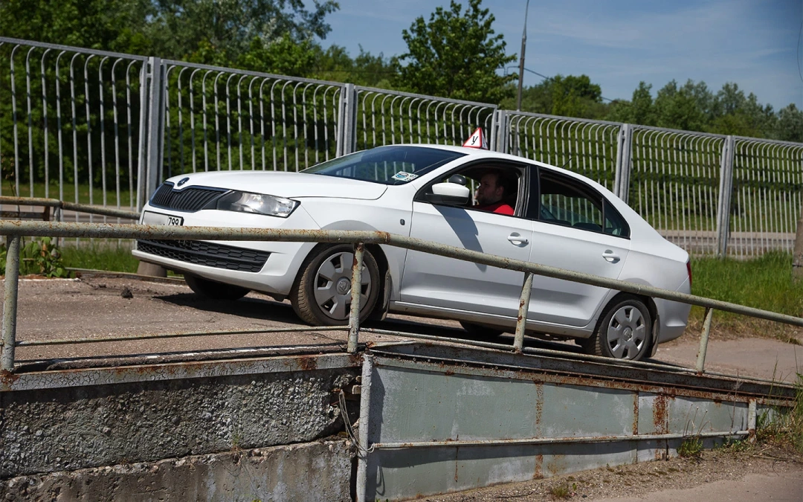
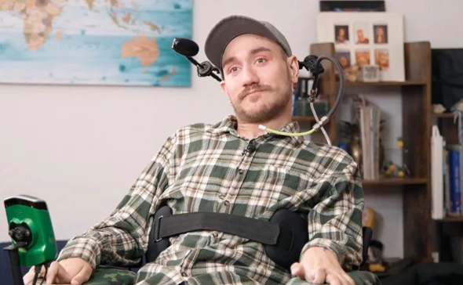
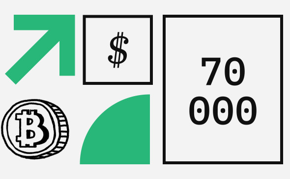
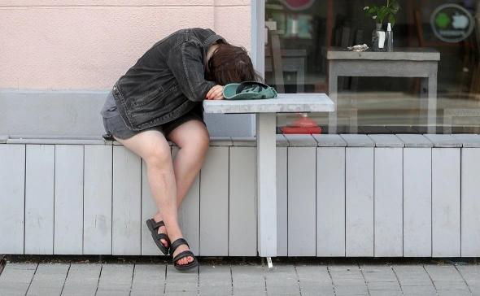

Внутренний экзамен в автошколе в 2024 году. Из чего состоит и как пройти

Перед сдачей экзамена на права в ГИБДД обучающимся в автошколах предстоит пройти в них внутреннее тестирование. Что это за процедура, и как к ней подготовиться?
Экзамен по теории
Если при сдаче экзамена в ГИБДД требуется ответить на 20 вопросов одного билетаи при этом допускается возможность сделать две ошибки (за каждую придется ответить на пять дополнительных вопросов), то в автошколе количество заданий может быть существенно больше, при том что дается право только на одну ошибку или они вообще не допускаются. Все зависит от внутреннего регламента автошколы, с которым имеет смысл ознакомиться заранее.
Практический экзамен
Перечень маневров, которые выполняются на внутреннем экзамене на тренировочной площадке схож с практическим экзаменом в ГИБДД. Однако отличия, правда, есть. Так, с 2021 года при сдаче экзамена по вождению в ГИБДД объединили «город» и «площадку» и водительские навыки кандидатов инспекторы начали оценивать сразу в городе. Элементы, которые раньше можно было демонстрировать на закрытой площадке без других участников дорожного движения, теперь приходится выполнять в максимально приближенных к реалиям условиях. Например, на улицах с малоинтенсивным движением или парковках торговых центров. В автошколах же эти навыки в том числе предлагают проходить на площадках. Для получения прав категории «В» (легковые автомобили) упражнения следующие:
- Заезд в бокс задним ходом;
- Параллельная парковка задним ходом;
- Разворот в ограниченном пространстве;
- Эстакада (старт с места на подъеме).
Однако на экзамене в ГИБДД каждое упражнение выполняется один раз и допустимо получение штрафных баллов. В автошколе число проездов может быть увеличено до пяти раз с нулевым уровнем терпимости к ошибкам. Аналогичная система действует при сдаче внутреннего экзамена на вождение в городских условиях.
Стрельба началась в момент, когда Трамп выступал перед собравшимися, он схватился за ухо и спрятался за трибуну. Его увели с окровавленным ухом. Представитель сообщил, что Трамп проходит обследование. О стрельбе доложили Байдену
На митинге Дональда Трампа в штате Пенсильвания произошла стрельба. 45-го президента США увели со сцены, он покинул мероприятие. Республиканец находится в больнице. По предварительной информации, один человек погиб.
Во время стрельбы господин Трамп схватился за ухо и лег на пол. После этого охрана увела его со сцены, у республиканца было окровавлено ухо. Участники митинга во время стрельбы легли на землю или присели. Уходя, господин Трамп поднял кулак, после чего люди встали и начали скандировать: «США». Секретная служба посадила политика в машину и увезла с мероприятия.
Кампания Дональда Трампа заявила, что кандидат в президенты «в порядке». Команда поблагодарила секретную службу за работу.
Республиканец Дэвид Маккормик, который баллотируется в Конгресс и участвовал в митинге в Пенсильвании, сообщил Fox News, что видел одного раненого. Его оперативно увезли медики.
Бывший детектив округа Колумбия Тэд Уильямс в эфире Fox News рассказал, что заниматься расследованием будет местная полиция и ФБР. Сейчас место преступления оцеплено.
Президент США Джо Байден сообщил журналистам, что его пока не проинформировали об инциденте, передает Reuters. По информации Секретной службы, глава государства находится в безопасности.
Лидер Демократической партии в Палате представителей Конгресса США Хаким Джеффрис выразил поддержку Дональду Трампу. Он заявил, что его молитвы с экс-президентом и что насилие не способ разрешать противоречия.
Дональд Трамп претендует на выдвижение на выборы президента 2024 года от Республиканской партии. Его соперником вновь может стать Джо Байден, который в 2020 году, по официальным данным, одержал победу над 45-м президентом.
Первый человек с чипом в мозге рассказал о расширении своих возможностей

После перенастройки чипа Neuralink в связи с отходом электродов от мозга участник эксперимента Арбо заявляет, что у него появилось больше возможностей, чем в начале эксперимента, хотя действуют около 15% электродов
Первый человек с чипом Neuralink в мозге Нолан Арбо заявил в интервью «РИА Новости», что эффективность устройства растет после перенастройки, которую провели из-за отхода электродов от мозга в мае. По его словам, сначала эффективность работы падала, но после настройки наблюдается «стабильный рост», и сейчас задействованы «плюс-минус 15% от общего числа электродов».
«Это достаточно малое количество ..., и при этом сейчас я могу гораздо больше, чем в начале эксперимента, когда большее их число было в моем мозге. Это просто сносит крышу», — рассказал Арбо.
Он добавил, что если со следующим участником эксперимента удастся добиться работы всех электродов или 90%, то он «сможет сделать то, что недоступно [ему] сейчас, и это дает большую надежду на будущее».
Арбо отметил свое недовольство сообщениями СМИ об отходе электродов от мозга: «То, как они писали об этом, было совсем не так, как это бы сделал я. ... Отвечая на вопросы об этом, я всегда говорил, что мы, несмотря на то что нити отошли, смогли превзойти первоначальные достижения ..., что само по себе было для меня триумфом, и это совсем не то, что писалось в статьях». Он связал такой дискурс с желанием «нанести удар по Илону Маску и всему, что он делает».
Арбо подчеркнул, что не разделяет позицию Маска по многим вопросам, но при этом ценит желание бизнесмена работать в интересах людей с ограниченными возможностями. «Это равносильно тому, чтобы иметь самого влиятельного в некотором роде человека в качестве защитника того, что важно лично для меня. Я был очень рад работать с ним», — отметил участник эксперимента.
30-летний Нолан Арбо был парализован ниже плеч после произошедшего восемь лет назад несчастного случая, когда он ударился головой при прыжке в воду. В конце января этого года ему вживили устройство Neuralink (стартап Маска), которое представляет собой капсулу-приемник, крепящуюся за ухом, как слуховой аппарат, с идущими от нее в мозг нитевидными электродами (до 1,5 тыс.), которые в четыре раза тоньше человеческого волоса. С помощью чипа Арбо может силой мысли двигать курсор по экрану компьютера.
Операция прошла успешно, в марте Арбо сыграл в шахматы и рассказывал, что может играть в компьютерные игры. В то же время в США выражали мнение, что результат эксперимента не является прорывным. Сам участник эксперимента отмечал, что чип «неидеален», но добавлял, что установка импланта изменила его жизнь.
В мае стало известно, что вживленные в мозг Арбо электроды частично вышли из строя из-за иммунного ответа организма, их пришлось удалить. По данным Reuters, Neuralink узнала об этой проблеме еще при проведении испытаний на животных, но сочла риск ее возникновения низким, чтобы пытаться предотвратить.
Арбо говорил, что был расстроен произошедшим, но продолжил использовать устройство, а Neuralink провела перенастройку алгоритмов. Арбо согласился на то, чтобы нейрочип пробыл в его мозге год, после чего будет решено, деактивировать или удалять его. Участник эксперимента заявлял, что, скорее всего, захочет сохранить чип и даже перейти на новую версию, когда она появится.
В середине мая Neuralink начала принимать заявки на второй подобный эксперимент, тогда же Управление по санитарному надзору за качеством пищевых продуктов и медикаментов США (FDA) выдало разрешение на вживление мозгового чипа второму пациенту, писала The Wall Street Journal. 10 июля Маск рассказал, что операция пройдет «в течение недели или около того».
Аналитик 10x Research спрогнозировал рост курса биткоина до $70 тыс.

Маркус Тилен назвал инвестиции институциональных инвесторов в ETF на биткоин катализатором его дальнейшего роста
Маркус Тилен из 10x Research допустил возможность роста курса биткоина до $70 тыс. уже к концу 2024 года, пишет CoinDesk, ссылаясь на отчет 10x Research. Аналитик считает, что росту курса первой криптовалюты будут способствовать макроэкономическая среда, денежно-кредитная политика, избирательный цикл в США и инвестиции участников традиционной финансовой сферы в ETF на биткоин.
«В то время как ФРС отложила первое снижение ставки до мая или июня, инфляция снижается, а рост экономики продолжается», — написал Тилен в своем отчете. Он также отметил совпадение циклов президентских выборов в США с годами халвинга биткоина, которые исторически способствовали росту цен. В частности, биткоин вырос на 152% в 2012 году, на 121% в 2016 году и на 302% в 2020 году, что в среднем составляет 192%.
Говоря о вялой ценовой динамике в этом году, Тилен отмечает, что несмотря на общую положительную динамику только в 7 случаях из 13 результаты января были прибыльными для биткоина.
Похожее видение ценовой динамики первой криптовалюты Тилен отразил в отчете для компании Matrixport, назвав январь одним из самых слабых месяцев для биткоина, в отличие от февраля, который считается более удачным месяцем для инвестиций в первую криптовалюту. В большинстве случаев доходность биткоина в феврале составила в среднем 8%, указано в недавнем отчете Matrixport.
В своем предыдущем прогнозе аналитик 10x Research допустил рост курса биткоина выше $52 тыс. к апрелю, а подходящим моментом для начала «бычьих» ставок — пробитие первой криптовалютой ценового уровня $43 тыс.
Нарколог предупредила о двойном ударе по сердцу от алкоголя в жару

Жаркая погода и употребление алкогольных напитков несовместимы для организма человека, поскольку подвергают двойной нагрузке его сердечно-сосудистую систему.
Спиртные напитки в жару чрезвычайно опасны для здоровья, поскольку их употребление повышает вероятность развития «сердечной катастрофы» и теплового удара.
«Сочетание алкоголя и жары приводит к расширению капилляров, кровенаполнению подкожной капиллярной сети и, как следствие, к снижению артериального давления», — пояснила она.
Сердце в этих условиях вынуждено работать более интенсивно, чтобы компенсировать падение давления крови.
«И жара, и употребление алкоголя усиливают потоотделение. Алкоголь еще и усиливает диуретический эффект, в результате чего может развиться серьезное обезвоживание», — продолжила эксперт.
По ее словам, в такой ситуации организм теряет не только воду, но также соли и микроэлементы. В результате повышенные нагрузки снова ложатся на сердечно-сосудистую систему.
Клименко рекомендовала в жаркую погоду пить небольшими порциями воду, примерно по 100 мл.
«Большие объемы употребляемой воды увеличивают нагрузку на сердце и почки, а холодные напитки хуже усваиваются организмом, могут спровоцировать простудные заболевания, вызывают спазм сосудов, что затрудняет теплоотдачу и также усиливает нагрузку на сердце», — продолжила эксперт.
Однако не все напитки полезны в жаркую погоду. Нужно ограничить потребление колы, черного чая и кофе. Входящий в их состав кофеин также оказывает мочегонный эффект, что усиливает обезвоживание.
Из еды нужно отдать предпочтение зелени и овощам, рыбе вместо мяса, а торты и пирожные на десерт заменить ягодами и фруктами.